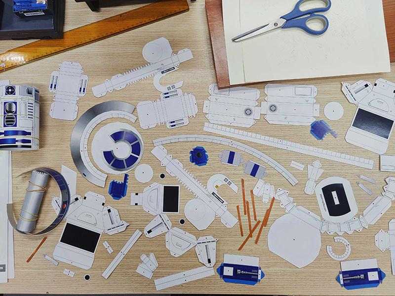
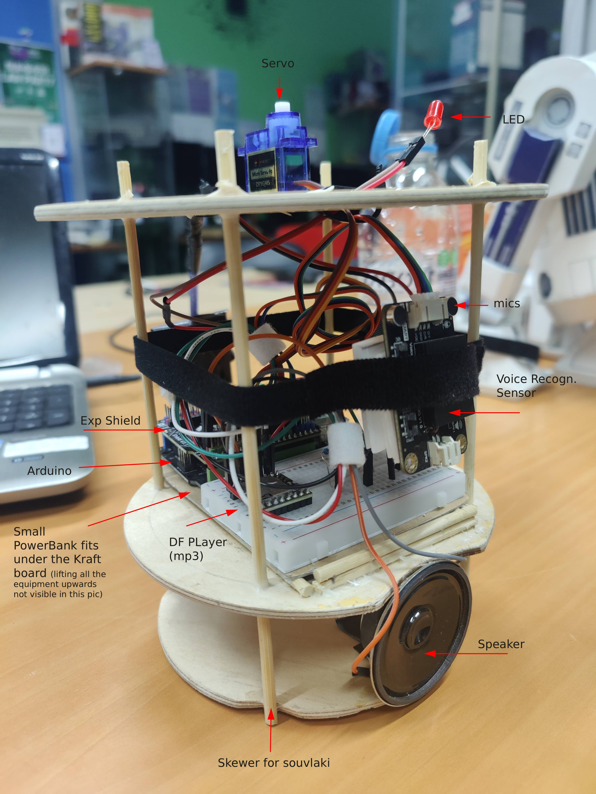

06. R2inoD2ino · Robot με Voice Recognition
Δημιουργική κατασκευή που συνδυάζει Arduino αυτοματισμό και papercraft design. Το robot αναγνωρίζει φωνητικές εντολές και απαντά με ήχους, κίνηση κεφαλιού και LED φωτισμό.
Περιγραφή
Το R2inoD2ino είναι ένα θεματικό εκπαιδευτικό project που παντρεύει ηλεκτρονικά, προγραμματισμό και χειροτεχνία. Το εξωτερικό σώμα είναι papercraft και το εσωτερικό βασίζεται σε ξύλινη υποδομή για τη στήριξη του hardware.
Ολοκλήρωση της κατασκευής στον Σύλλογο Τεχνολογίας Θράκης
Ομάδα Κατασκευής: Άρης Τ., Γιάννης Γ., Θεόδωρος Κ., Αστέρης Μ., Δούκας Π.
Α. Βασικές λειτουργίες
- Υποστήριξη έως 17 custom φωνητικών εντολών
- Λογική απόκρισης με switch-case (ήχος + servo + LED)
- Idle mode με τυχαία επιλογή ήχων αναμονής
- Συνδυασμός μηχανικής κατασκευής και embedded λογισμικού
Β. Υλικά
- Arduino UNO (DFRduino)
- Arduino Expansion Shield
- DFRobot Voice Recognition Sensor
- DFPlayer Mini MP3 + ηχείο 2W 8Ohm
- 1x Servo και 1x κόκκινο LED
- Powerbank + regulator L7805CV (5V 1.5A)
Γ. Οδηγίες προετοιμασίας
- Καταγραφή φωνητικών εντολών απευθείας στη μνήμη του module
- Αποφυγή μεγάλων φράσεων για καλύτερη αναγνώριση
- Ονόματα αρχείων ήχου σε SD: 001.mp3, 002.mp3, ...
- Θέσεις 30-45 αφιερωμένες στο idle mode
Δ. Κατασκευή σώματος
- Εξωτερικό papercraft βασισμένο σε μοντέλο R2-D2
- Εσωτερικός ξύλινος σκελετός για μηχανική σταθερότητα
- Ενίσχυση με depron για σωστή εφαρμογή επιπέδων
Εκπαιδευτικοί στόχοι
- Κατανόηση του σειριακού τρόπου εκτέλεσης με delay()
- Εισαγωγή στη non-blocking λογική με millis()
- Roadmap για πλήρη refactor σε ταυτόχρονη κίνηση και ομιλία
Φωτογραφίες


